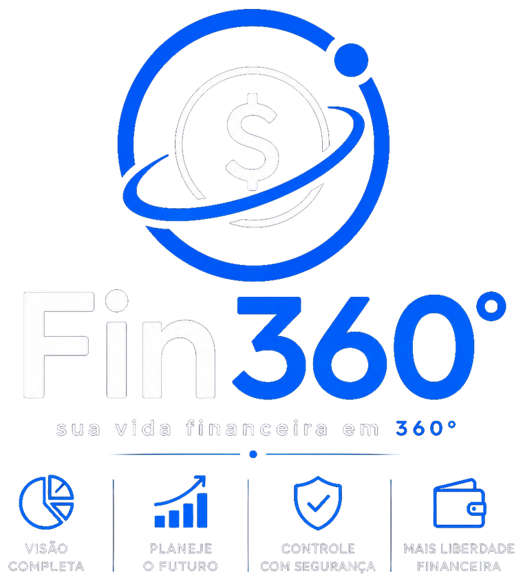

← Voltar ao appÚltima atualização: 9 de agosto de 2026
Neste documento
Estes Termos são o contrato entre você e o Fin360°. Ao criar uma conta ou assinar, você concorda com o que está escrito aqui. Vale a pena ler — está em português claro e é curto.
O Fin360° é um aplicativo desenvolvido e operado por Fin360, pessoa física inscrita no CPF (número completo informado mediante solicitação ou quando exigido por autoridade competente), disponível em app.fin360app.com.br.
Contato: contato@fin360app.com.br
O Fin360° é uma ferramenta de organização financeira pessoal. Ele permite registrar receitas, despesas, cartões, contas, metas e reservas, e mostra esses números organizados em relatórios e projeções.
O Fin360° não é uma instituição financeira e não presta consultoria de investimentos.
Especificamente, o Fin360° não:
Os números exibidos — inclusive projeções e saldos futuros — são apenas cálculos sobre as informações que você mesmo digitou. Se um lançamento for esquecido ou digitado errado, o resultado estará errado. As decisões financeiras são suas, e a responsabilidade por elas também.
Você tem 7 dias corridos, contados da data da compra, para desistir e receber 100% do valor pago de volta — sem precisar justificar o motivo.
É o direito de arrependimento previsto no art. 49 do Código de Defesa do Consumidor, garantido em qualquer compra feita pela internet.
Para exercer, basta escrever para contato@fin360app.com.br dentro do prazo. O estorno é processado pela Cakto e o prazo de crédito depende do meio de pagamento usado (normalmente até duas faturas, no caso de cartão de crédito).
Você pode cancelar a assinatura quando quiser, sem multa e sem fidelidade.
Ao cancelar, o acesso continua até o fim do período já pago. Você pagou por aquele mês; ele é seu. Depois disso, a renovação simplesmente não acontece.
O cancelamento é feito na plataforma de pagamento (Cakto), pelo link do e-mail de compra. Se tiver qualquer dificuldade, escreva para nós que cancelamos por você.
Falta de pagamento não apaga os seus dados.
Se a cobrança falhar, damos alguns dias de tolerância antes de qualquer restrição — cartão recusado por bobagem é comum. Passado esse prazo, a conta fica em modo somente-leitura: você continua entrando, consultando todo o seu histórico e exportando seus dados, mas não consegue criar ou editar lançamentos até regularizar.
Voltando a pagar, tudo é liberado exatamente como estava.
Ao usar o Fin360°, você concorda em não:
O descumprimento pode levar à suspensão ou ao encerramento da conta, sem prejuízo das medidas legais cabíveis.
Trabalhamos para manter o Fin360° disponível o tempo todo, mas não garantimos funcionamento ininterrupto. Podem ocorrer paradas por manutenção, atualização ou falha de terceiros dos quais dependemos (provedores de infraestrutura, por exemplo).
Manutenções programadas serão avisadas com antecedência sempre que possível. O app guarda uma cópia local dos seus dados no navegador, o que permite consultá-los mesmo com o serviço temporariamente fora do ar.
O software, o nome "Fin360°", a logomarca, as telas e o design são de propriedade de Fin360 e protegidos pela legislação de direitos autorais e propriedade industrial.
A assinatura concede a você uma licença de uso pessoal, limitada, não exclusiva e intransferível, válida enquanto durar a assinatura. Ela não transfere a propriedade do software nem autoriza sua revenda.
O Fin360° é uma ferramenta de registro e visualização. Dentro do que a lei permite:
Nada nestes Termos afasta os direitos que o Código de Defesa do Consumidor garante a você. Nos casos em que a nossa responsabilidade for reconhecida, ela fica limitada ao valor pago por você nos últimos 12 meses de assinatura.
Por você: a qualquer momento, cancelando a assinatura e, se quiser, pedindo a exclusão da conta.
Por nós: podemos suspender ou encerrar uma conta que descumpra o item 9, mediante aviso prévio, salvo em casos de fraude, risco à segurança ou ordem judicial, em que a medida pode ser imediata.
Se o serviço for descontinuado: avisaremos com pelo menos 60 dias de antecedência, interromperemos novas cobranças, devolveremos proporcionalmente o valor de período já pago e não usufruído, e manteremos a exportação de dados disponível durante todo esse período.
Podemos atualizar estes Termos. Mudanças relevantes serão comunicadas por e-mail ou dentro do app com pelo menos 30 dias de antecedência. Se você não concordar, pode cancelar antes da entrada em vigor, com devolução proporcional do período pago e não usufruído.
Estes Termos são regidos pelas leis da República Federativa do Brasil, em especial o Código de Defesa do Consumidor (Lei nº 8.078/1990), o Marco Civil da Internet (Lei nº 12.965/2014) e a LGPD (Lei nº 13.709/2018).
Fica eleito o foro da comarca de domicílio do consumidor para dirimir eventuais controvérsias, conforme faculta o art. 101, I, do Código de Defesa do Consumidor.
Antes de qualquer medida judicial, convidamos você a nos escrever: a maioria dos problemas se resolve por e-mail, e mais rápido.
E-mail: contato@fin360app.com.br
Responsável: Fin360
Você também pode registrar reclamações de consumo no consumidor.gov.br.
Fin360° · Política de Privacidade · Voltar ao app